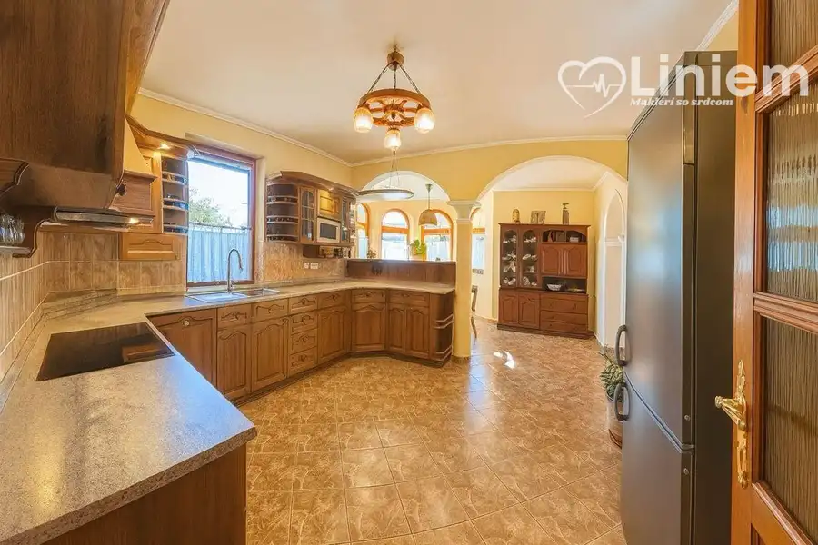
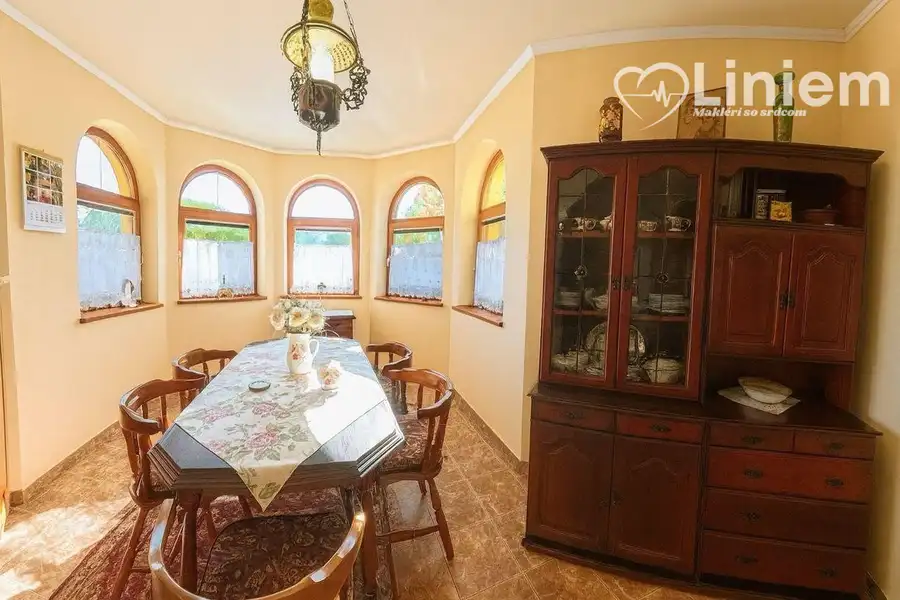
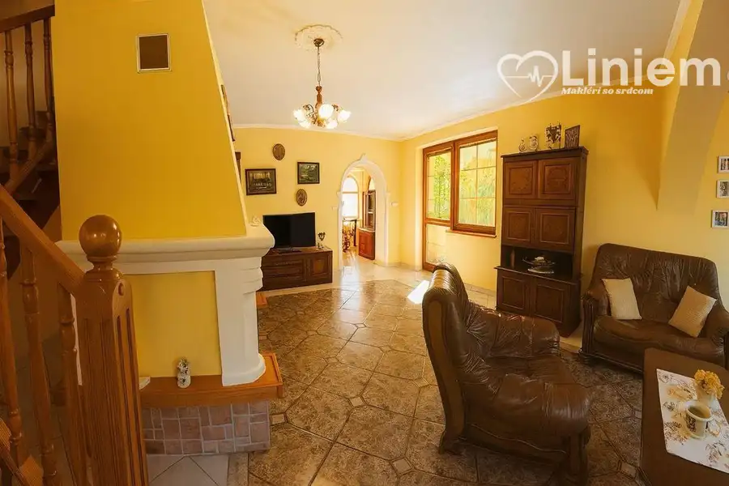
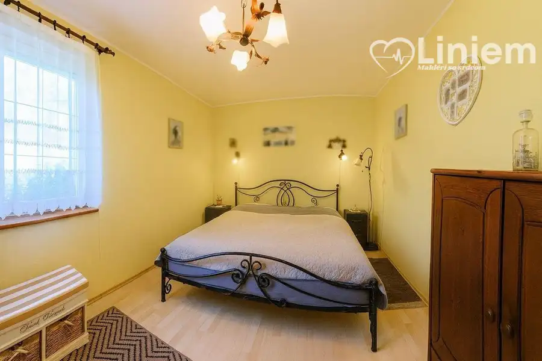
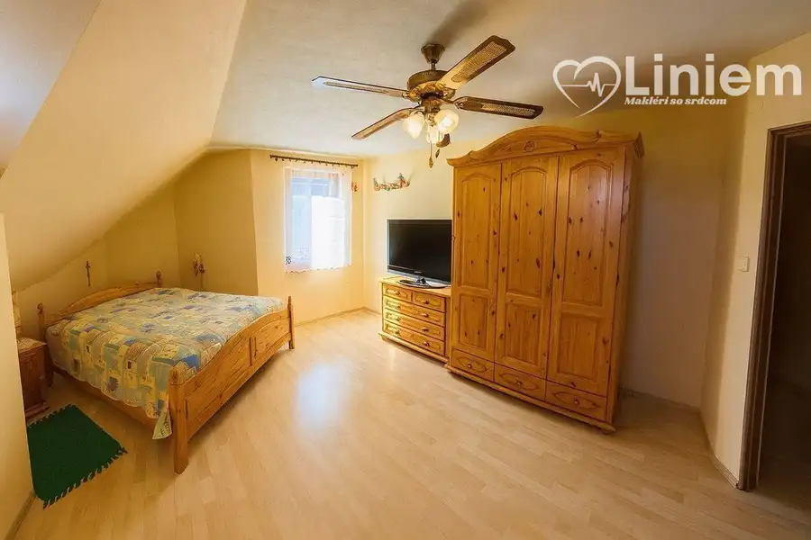
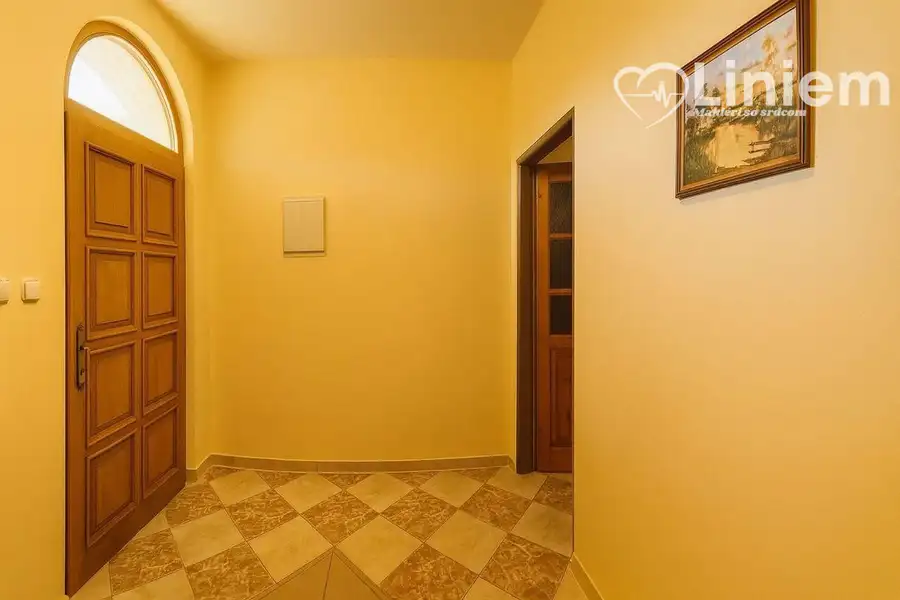

NA PREDAJ RD Pokojné bývanie s veľkým pozemkom a súkromím
Zlaté Moravce






- Plocha200 m²
- StavKompletná rekonštrukcia
- VlastníctvoOsobné
O nehnuteľnosti
Keď sa z domu stane životný projekt.Tento rodinný dom vznikal svojpomocne s dôrazom na poctivé remeslo, rodinu a pokojné bývanie. Majitelia tu vytvorili miesto, kde sa spája priestor, zeleň a súkromie do jedného harmonického celku. Výsledkom je nehnuteľnosť s atmosférou, ktorú v bežnej katalógovej novostavbe len tak nenájdete.Nachádza sa v tichom prostredí obce Prílepy pri Zlatých Moravciach, kde ponúka dostatok priestoru pre rodinný život, oddych aj realizáciu vlastných predstáv o bývaní. 3D obhliadka: https://my.matterport.com/show/?m=4apFTc88Yta Čo ponúka rodinný dompriestranná dispozícia s viacerými izbami,veľká denná časť pre spoločné chvíle s rodinou,upravený dvor a dostatok zelene,terasa a bazén pre letné dni,samostatná garáž,komfortné parkovanie priamo na pozemku,príjemné súkromie a pokojné zázemie mimo ruchu mesta. Pre koho je tento dom ideálnypre rodinu, ktorá hľadá pokojné bývanie s dostatkom priestoru,pre ľudí, ktorí túžia po veľkom pozemku, súkromí a zeleni,pre záujemcov, ktorí chcú bývať v dome s charakterom a vlastným príbehom. Prečo je výnimočnýpôsobí autenticky a má príjemnú rodinnú atmosféru,ponúka dostatok priestoru na bývanie aj oddych,súčasťou je terasa, bazén a garáž,lokalita poskytuje pokoj vidieka s dobrou dostupnosťou do Zlatých Moraviec. Fakty a číslaLokalita: Zlaté Moravce – PrílepyTyp nehnuteľnosti: rodinný domInžinierske siete: elektrina, voda, odkanalizovanie riešené žumpouďalšie podklady a dokumentáciu rád predstavím osobne na obhliadke Cena 280 000 €Rád vám poskytnem viac informácií, dokumentáciu k nehnuteľnosti a dohodnem si s vami osobnú obhliadku.Kontakt a obhliadkaPeter Čoros, RSc. – Liniem reality0948 571 309coros@liniemreality.sk Rezervujte si termín obhliadky:https://forms.gle/U7JjTTvLbZProqGP6
Parametre
- Druh
- Rodinný dom
- Dátum zverejnenia
- 06. 05. 2026
- Energetický certifikát budovy
- nie je
- Plocha pozemku
- 1226 m²
- Počet izieb / miestností
- 5
- Stav nehnuteľnosti
- Kompletná rekonštrukcia
- Telekomunikácie
- Internet
- Terén pozemku
- Rovinatý
- Typ
- Predaj
- Typ konštrukcie
- Tehlová
- Vlastníctvo
- Osobné
- Vybavenie
- Balkón, Garáž
- Zastavaná plocha
- 270 m²
- Úžitková plocha
- 200 m²
Kde to je


Mohlo by Vás zaujímať
 PozemokNové
245 000 €Na predaj - unikátny pozemok pre developéra aj milovníka prírody
Báb
2878 m²
PozemokNové
245 000 €Na predaj - unikátny pozemok pre developéra aj milovníka prírody
Báb
2878 m²
 Komerčné priestoryNové
1 750 €Administratívne priestory s parkovaním pre kamióny priamo pri R1
Nitra
115 m²
Komerčné priestoryNové
1 750 €Administratívne priestory s parkovaním pre kamióny priamo pri R1
Nitra
115 m²
 BytNové
Cena na vyžádáníNA PRENÁJOM: 2-izbový byt v Nitre – Krškany
Nitra
2-izbový38 m²4. podlažie
BytNové
Cena na vyžádáníNA PRENÁJOM: 2-izbový byt v Nitre – Krškany
Nitra
2-izbový38 m²4. podlažie